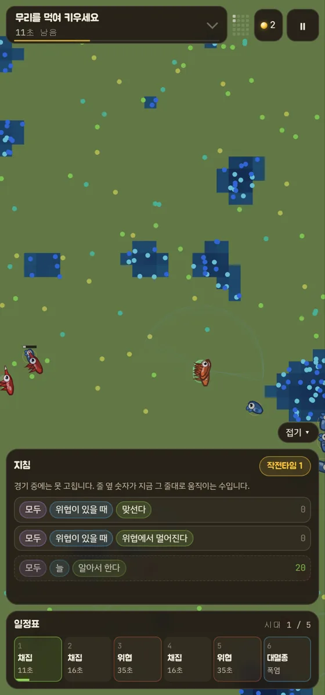
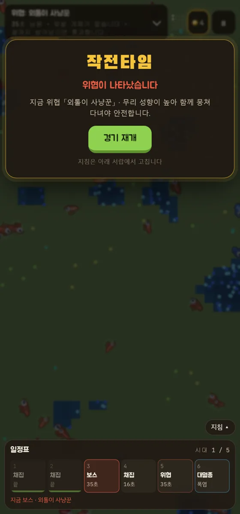
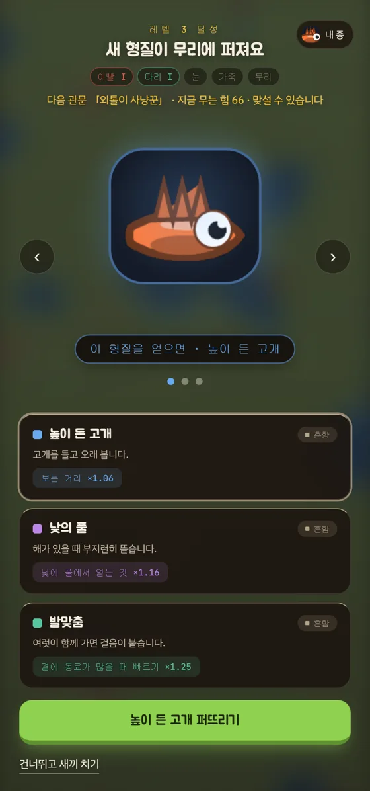

적자생존
한 종을 길러 생태계의 정점에 올리세요.
경기 전에 적어 둔 지침으로 무리를 이끌고, 라운드마다 닥치는 시련을 넘으세요.
설치 없이 브라우저에서 무료로 플레이할 수 있습니다.
개발은 2026년 9월 12일 이후로 멈춰 있습니다. 지금 올라와 있는 판은 그대로 플레이할 수 있습니다.
한 판은 채집과 보스전, 대멸종으로 흘러갑니다
채집
무리를 먹여 키웁니다. 먹이가 곧 경험치, 레벨이 오르면 카드 3장 중 1장을 고릅니다. 라운드마다 사냥, 새끼 치기, 자리 지키기, 금빛 짐승 잡기 같은 시련이 걸립니다.
보스
굶주린 상어, 그림자 매복자, 성난 말벌 떼… 위협이 나타나면 경기가 멈추고 작전타임이 열립니다. 맞설 개체를 지침으로 정해 체력 바를 깎아 물리치면 방울이 떨어집니다.
대멸종
혹독한 추위, 대가뭄, 대역병, 폭염. 버티면 더 험한 다음 시대가 열리고, 깊은 시대에는 긴이빨 맹수와 검붉은 폭군이 야생에 섞입니다. 시대 5를 넘기면 정복입니다.
무리는 경기 전에 적어 둔 지침대로 움직입니다
지침 시트 누가, 어떤 때, 무엇을
한 줄에 누가 어떤 때 무엇을 할지 적습니다. 경기 중에는 위에서부터 먼저 맞아떨어지는 줄이 실행되고, 줄마다 지금 그 줄로 움직이는 개체 수가 뜹니다. 맨 아래에는 '모두, 늘, 알아서 한다'가 늘 깔려 있습니다.
줄 수 2줄에서 7줄
처음에는 두 줄을 씁니다. 무리 범주의 티어가 오를 때마다 한 줄씩 늘고, 열쇠 부름을 얻으면 한 줄을 더 씁니다.
작전타임 단계마다 한 번
위협이나 대멸종 단계가 시작되면 경기가 저절로 멈춥니다. 그 밖에도 단계마다 한 번 직접 불러 세울 수 있고, 지침은 경기가 멈춰 있을 때만 고칩니다.
일정표 시대마다 6단계
이번 시대의 채집, 위협, 대멸종 여섯 단계가 차례와 시간까지 늘 화면에 보입니다. 어떤 보스가 오는지는 그 단계가 열릴 때 알 수 있습니다.
본능 지침보다 먼저
달아나기, 물고 있는 사냥감과 금빛 짐승 쫓기, 방울 줍기는 지침보다 앞섭니다. 본능을 따르는 개체 수는 지침 아래에 따로 뜹니다.
관찰 기록



도장은 방울로 올리고, 능력은 카드로 얻습니다
이빨
무는 힘과 사냥. 키울수록 풀에서 얻는 것이 줄어듭니다.
다리
빠르기와 험한 땅. 키울수록 몸이 가벼워지고 잘 지칩니다.
눈
보는 거리와 어둠. 키울수록 옆과 뒤가 좁아집니다.
가죽
버티는 힘과 추위. 키울수록 몸이 커지고 더위에 약해집니다.
무리
새끼와 지침 줄 수. 키울수록 나눠 먹고 병이 돕니다.
범주 다섯의 도장은 카드가 아니라 방울로만 오릅니다. 방울은 보스를 물리치거나 대멸종을 버티거나 새 시대에 들어설 때 떨어지고, 무리가 스스로 찾아가 주워 옵니다. 도장이 문턱을 넘으면 티어 효과가 켜지고 드래프트에 새 카드가 열립니다.
카드 79장. 열쇠 7종은 없던 능력을 열고, 조건부 특성은 밤이나 수풀, 굶주림처럼 맥락이 맞을 때만 켜지며, 3단과 4단이 여는 고유 카드 20장에는 효과마다 대가가 붙습니다.
세계가 먼저 정해지고, 종은 그 다음에 고릅니다.
초원 GRASSLAND
평평한 초원에 작은 호수가 몇 개 있습니다. 산도 험한 곳도 없어 어디로든 걸어갈 수 있습니다.
대륙 BASELINE
땅이 넓고 바다는 호수처럼 흩어져 있습니다. 걷는 종이 살기 좋습니다.
판게아 MOUNTAIN
하나로 이어진 넓은 땅을 바다가 둘러쌉니다. 가운데를 가르는 산맥 위에 먹이가 많습니다.
군도 ISLANDS
잘게 쪼개진 섬과 얕은 바다입니다. 헤엄치거나 날지 못하면 한 섬에 갇힙니다.
대양 OCEAN
지구처럼 바다가 대부분입니다. 뭍은 좁아 붐비고, 바다가 진짜 삶터입니다.
시대가 지나면 세계도 바뀝니다. 지금 세계에서 잘 살던 형질이 다음 세계에서는 짐이 되기도 합니다.
군도에서 해 보는 관찰 실습
군도: 잘게 쪼개진 섬과 얕은 바다입니다. 헤엄치거나 날지 못하면 한 섬에 갇힙니다.
개발 일지
기획서에서 시작해 지금의 게임이 되기까지 석 달 가까운 기록 가운데, 방향이 바뀌거나 큰 결정을 내린 날을 골라 실었습니다. 노란 점은 무리를 지켜보기만 하던 관전형 시절입니다.
-
2026년 6월 25일
선택만 하는 진화 게임
적자생존은 한 종을 길러 생태계의 정점에 올리는 진화 로그라이크라는 기획에서 시작했습니다. 기획서가 그린 게임은 스포어와 Everything is Crab처럼 한 종을 진화시키되, 오토배틀러처럼 플레이어는 카드만 고르고 결과는 규칙으로 돌아가는 생태 시뮬레이션이 보여 주는 게임이었습니다. 막마다 보스가 길을 막고 그 사이를 카드로 채우는 뼈대는 Slay the Spire에서 빌렸습니다.
첫날 바로 웹에 올려 폰에서 확인할 수 있게 했고, 그날 안에 카드를 고르고 지켜본 뒤 보스와 대멸종을 넘기는 한 판이 끝까지 돌아갔습니다. 보스전은 싸움을 세세하게 맞추는 대신 정해진 시간을 버티면 넘어가는 관문으로 만들었습니다. 카드를 고르지 않으면 어딘가에서 막히고, 예고를 보고 맞는 카드를 고르면 넘을 수 있는 판이 그렇게 만들어졌습니다.
-
2026년 6월 29일
숫자놀음 대신 지형과 감각
형질 수치만 오르내리는 판은 숫자놀음처럼 느껴졌습니다. 저는 스포어처럼 지형과 낮밤이 있고, 시야각이나 초음파, 날개나 독침 같은 몸의 차이가 실제로 살길을 바꾸는 게임을 원했습니다. 형질이 빛날 무대가 없을 만큼 환경이 밋밋한 것이 근본 원인이라고 보고, 바다와 육지와 산으로 나뉜 지형부터 만들었습니다. 다음 날에는 낮과 밤이 돌게 하고, 개체의 시야를 앞쪽으로 펼쳐진 부채꼴로 바꿨습니다.
그 무렵 생물이 화면에서 떨리는 문제가 며칠째 풀리지 않았습니다. 위치를 부드럽게 다듬는 쪽만 고치다가, 제가 떨림이 좌우로 흔들리는 회전이라고 짚은 뒤에야 원인이 드러났습니다. 걸음마다 바뀌는 방향을 그대로 따라 돌던 몸을 평균 방향을 따라 돌게 바꾸자 떨림이 멎었습니다.
-
2026년 6월 30일 ~ 7월 1일
큰 생태계가 아니라 내 무리
이날 저는 게임의 방향을 이렇게 다시 정했습니다.
"대형 시뮬이 아니라 내 애들을 애착 갖고 키우고 관찰하는 게임."
카메라가 내 종을 따라가지 못하던 것도, 개체 수가 크게 출렁이던 것도 내 종이 맵 전체에 흩어져 있어서 생긴 문제였습니다. 그래서 개체 수를 크게 줄이고 한 무리로 모여 다니게 했습니다.
다음 날에는 한 마리를 누르면 카메라가 그 개체를 따라가며 다가가고, 이름과 나이, 지금 하는 일이 적힌 카드가 뜨게 했습니다. 따라가던 개체가 죽으면 작별 인사를 한 번 띄우고 무리 전체를 보는 화면으로 돌아옵니다.
-
2026년 7월 5일
스티커처럼 또렷한 생물
생물의 생김새가 여전히 조잡했습니다. 코드로 사실적인 생물을 그리려다 반투명한 면이 겹쳐 탁해진 것이 원인이었습니다. 그래서 굵은 윤곽선과 불투명한 평면 음영, 크고 또렷한 눈을 쓰는 스티커 같은 그림체로 바꿨고, 저는 이쪽이 더 또렷하고 낫다고 보고 이 방향을 골랐습니다.
형질이 생김새로 드러나는 규칙은 그대로 두었습니다. 빠른 종은 몸이 길쭉하고, 시야가 넓은 종은 눈이 큰 식입니다. 같은 날 같은 종 안에서도 한 마리씩 무늬와 눈, 몸집과 색조가 다르게 보이도록 개성을 넣었습니다.
-
2026년 7월 5일
시대마다 세지는 위협
이긴 뒤에도 판이 이어지도록 Brotato처럼 갈수록 어려워지는 구조를 넣었습니다. 한 시대를 버텨 내면 다음 시대로 넘어가 새 땅에서 무리를 다시 꾸리고, 진화한 형질과 레벨은 그대로 가져갑니다. 살아남아야 하는 개체 수는 그대로 두고 보스와 대멸종만 세지게 해서, 종의 성장과 위협이 경주하게 만들었습니다.
끝없이 이어지게 두지는 않았습니다. 시대 5의 대멸종을 넘기면 정복으로 판이 끝나도록 상한을 정했습니다.
-
2026년 7월 8일
포근한 관찰의 색
'포근한 관찰'이라는 이름의 화면 디자인 시안을 게임 화면 전체에 입혔습니다. 차가운 남색 계열이던 화면이 따뜻한 흙빛으로 바뀌었고, 형질마다 정한 여섯 가지 색을 능력치 막대와 범례, 판이 끝난 뒤의 기록에 똑같이 썼습니다. 이 소개 페이지의 색도 그때 정한 색에서 가져왔습니다.
-
2026년 7월 13일
하늘과 땅과 물의 보스
저는 날 수 있는 종이라면 땅의 보스를 피할 수 있어야 하고, 보스도 실제 동물처럼 저마다 사냥하는 자리가 있어야 한다고 봤습니다. 그래서 보스마다 하늘과 땅과 물 가운데 사냥하는 층을 정하고, 그 층에 없는 개체는 잡지 못하게 했습니다. 하늘의 보스 둘과 물의 보스 하나도 새로 넣었습니다.
다만 날개만으로 보스를 건너뛸 수 있으면 날개가 정답이 되어 버립니다. 그래서 나는 종에게는 하늘의 보스가 대신 찾아오게 했습니다. 날개는 보스를 건너뛰는 능력이 아니라, 다른 관문으로 갈아타는 선택이 됐습니다.
-
2026년 7월 14일
뭉친 무리는 노리지 않는다
저는 무리 성향이 쓸모없는 형질이 아닌가 의심했고, 재 보니 실제로 그랬습니다. 처음에는 곁에 이웃이 많을수록 물렸을 때 덜 다치게 고쳐 봤지만 판의 결과는 거의 달라지지 않았습니다. 잡아먹히는 개체는 대부분 이미 무리에서 떨어진 낙오자라서, 이웃의 덕을 볼 일이 없었기 때문입니다.
그래서 물린 뒤가 아니라 물리기 전에 막기로 했습니다. 무리 성향을 높이 키운 종이 뭉쳐 있으면, 포식자는 그 무리를 아예 사냥감으로 고르지 않습니다.
-
2026년 8월 1일
지켜보기만 하는 게임
플레이어가 지켜보기만 하는 시간이 너무 길다는 문제를 놓고 두 가지 길을 따졌습니다. 무리를 이끄는 우두머리 한 마리를 직접 조종하는 길과, 실시간 카드 배틀러로 바꾸는 길이었습니다. 카드 배틀러로 가면 지금까지 만든 생태 시뮬레이션을 통째로 버려야 해서, 이 게임의 다른 모습이 아니라 새 게임이라고 보고 기록으로만 남겼습니다.
우두머리는 사람이 방향만 정해 주는 평범한 개체로 만들었습니다. 우두머리가 죽어도 판은 끝나지 않고 곁의 개체가 뒤를 잇습니다. 개체는 죽어도 종은 산다는 이 게임의 주제를, 조종이 깨지 않고 오히려 보여 주게 하려는 것이었습니다.
-
2026년 8월 2일
누른 곳이 곧 명령
조종을 기본으로 정하고, 화면의 조이스틱을 없앴습니다. 대신 빈 땅을 누르면 그리로 가고, 먹잇감을 누르면 그 먹잇감을 노리게 바꿨습니다. 조종하기로 한 이상 지켜보는 기능은 두지 않기로 해서, 개체 카드와 한 마리 관찰 기능도 이때 지웠습니다.
-
2026년 8월 3일
라운드에 이길 것이 없다
탭으로 조종하는 판을 해 봐도 여전히 재미가 없었습니다. 그래서 문명, 전염병 주식회사와 롤토체스를 나란히 놓고 이 게임에 무엇이 빠졌는지 따졌습니다. 롤토체스는 전투 중에 조종할 것이 없는데도 재미있습니다. 그 전투는 내 조합이 상대를 이기는지에 답해 주지만, 이 게임의 관전 시간은 아무 질문에도 답하지 않았습니다. 차이는 조종이 아니라 판정이었습니다.
그래서 같은 날 라운드마다 넘어야 할 목표를 미리 알려 주고, 라운드가 끝나면 넘었는지 판정하는 구조를 만들었습니다. 조종은 할 일을 늘릴 뿐 판돈을 만들지는 않는다는 것이 이날의 결론이었습니다.
-
2026년 8월 4일
종을 주관하는 자리
플레이어가 무엇인지에 대한 제 답은 이랬습니다.
"내가 그 무리의 일원인 게 아니라, 해당 종을 주관하는 신적인 존재."
그래서 우두머리 한 마리를 조종하던 방식을 버리고, 누른 자리로 무리 전체에 지시를 내리게 바꿨습니다. 지시를 받은 개체가 늦게 가거나 절반만 가는 것은 괜찮지만 엉뚱한 곳으로 가면 조작이 고장 난 것처럼 보이기 때문에, 방향만큼은 반드시 따르게 했습니다.
-
2026년 8월 6일
숫자가 하는 거짓말
시대가 깊어질수록 어려워지는 것이 체감되게 해 달라고 했는데, Claude Code가 형질의 상한을 시대마다 올리는 큰 구조 변경까지 스스로 얹었습니다. 저는 구현을 멈추게 하고 회의부터 했습니다.
회의에서 진짜 문제가 드러났습니다. 형질을 0부터 100까지의 숫자로 보여 주는 것은 눈금이 고르다는 약속인데, 50에서 60으로 가는 데는 카드 한 장이, 90에서 100으로 가는 데는 여섯 장이 들었습니다. 한두 칸 오른 차이는 판마다의 운에 묻혀 보이지 않았고, 눈에 띄려면 열 칸쯤은 올라야 했습니다.
그래서 롤토체스처럼 형질을 다섯 범주로 묶고, 범주마다 쌓은 도장이 문턱을 넘을 때만 효과가 켜지는 티어 방식으로 바꿨습니다. 다음 티어로 갈수록 필요한 도장이 늘어나는 것도 화면에 숫자로 적혀 있으면 거짓말이 아닙니다. 원하는 곳에 점수를 자유롭게 나눠 주는 방식은 잘하는 사람일수록 매 판 같은 빌드로 모이게 되어 로그라이크답지 않다고 보고 접었습니다.
-
2026년 8월 7일
무리가 주워 오는 방울
티어를 올리는 재료로 방울을 만들었습니다. 방울은 들판의 정해진 자리에 나타나고, 손가락으로 누르는 것이 아니라 무리가 가서 밟아야 주워집니다. 누르는 동작은 이미 무리에게 내리는 지시로 쓰고 있어서 겹치지 않게 한 것입니다.
방울은 사냥한 횟수 같은 양이 아니라 사건에 걸었습니다. 횟수를 세면 그 행동을 잘하는 빌드만 유리해지기 때문입니다. 개체 수가 정해진 문턱을 넘거나, 바닥까지 줄었던 무리가 다시 불어나거나, 보스를 물리치고 대멸종을 버텨 낼 때 방울이 생깁니다. 이때 카드는 더 이상 도장을 주지 않고, 도장은 방울로만 오르게 하기로 정했습니다.
-
2026년 8월 10일
카드에는 고유한 효과와 대가
새로 바꾼 카드는 대부분 '어떤 때 무엇이 몇 배'라는 같은 문장이라 직관적이지도 않고 매력도 없었습니다. 제가 바란 '공짜 점심은 없다'와 '하이 리스크 하이 리턴'도 들어 있지 않았습니다. 무엇보다 티어와 카드의 역할이 뒤바뀌어 있었습니다. 제 원래 계획에서는 티어를 올리면 더 좋고 특별한 카드가 열리고, 티어 자체의 보상은 그에 비해 소소해야 했습니다.
그래서 카드 한 장 한 장에 고유한 효과와 그에 맞는 대가를 주고, 카드는 티어를 올려야 열리게 정했습니다. 티어를 올릴 이유가 바로 그 카드입니다.
-
2026년 8월 11일
고유 카드 스무 장
3단과 4단 티어가 여는 고유 카드 스무 장을 만들었습니다. 4단 카드는 전설 등급이고, 모든 카드에 효과와 함께 대가가 있습니다. 전날 카드가 뒤집힌 것은 Claude Code가 빈자리를 혼자 채운 탓이어서, 이번에는 카드 목록을 제가 먼저 확인하고 승인한 뒤에 구현하게 했습니다.
능력이 있으면 그 능력을 쓸 줄도 알아야 한다는 생각도 이날 정리했습니다. 그래서 행동이 달라져야 뜻이 사는 카드 네 장에는, 그 카드를 얻은 종이 다르게 움직이는 규칙까지 함께 담았습니다.
-
2026년 8월 12일
시험이 아니라 시련
라운드 목표를 넘었을 때 뜨던 '합격 확정' 같은 말이 수능이나 자격증 시험처럼 느껴졌습니다. 그래서 시험과 합격, 불합격이라는 말을 시련과 '넘었습니다', '넘지 못했습니다'로 모두 바꿨습니다. 원래 시련이라는 이름을 쓰던 재난은 재앙으로 이름을 바꿔, 한 이름이 두 가지를 가리키지 않게 했습니다.
같은 날 라운드 시련 가운데 하나로 금빛 짐승 잡기를 넣었습니다. 그런데 내 종이 금빛 짐승을 쳐다보지도 않아서, 가까이 오면 스스로 쫓아가 덮치게 고쳤습니다.
-
2026년 8월 13일 ~ 14일
야생도 함께 자란다
이빨을 2단까지만 키워도 내 종이 야생에서 가장 센 포식자가 되어, 더는 위협이 되는 것이 없었습니다. 저는 시대가 오르면 땅도 바뀌고 종도 늘어나니 야생 생태도 함께 바뀌는 것이 자연스럽고, 야생도 같이 성장하게 하는 쪽이 가장 정직한 해결이라고 봤습니다. 그래서 깊은 시대에는 긴이빨 맹수와 검붉은 폭군이라는 상위 포식자가 야생에 섞이게 했습니다.
보스전은 반격하는 순간의 연출을 먼저 다듬어 보기로 했습니다. 다만 저는 보스전이 처음부터 잘못 들어간 요소일 수도 있다고 보고, 연출을 고친 뒤에도 어색하면 보스전을 빼고 다른 요소로 채울 각오를 했습니다.
-
2026년 8월 29일
접어 두기
보름 동안 손을 대지 않다가, 이 게임에 흥미와 애정을 잃어 개발을 접어 두기로 했습니다. 버린 것이 아니라 덮어 둔 것이라, 바뀐 것을 모두 배포하고 테스트를 통과한 상태로 남겼습니다.
-
2026년 9월 7일 ~ 9일
재미가 없는 이유를 다시
9일 만에 게임을 다시 열고, 레벨업 때 카드 세 장 가운데 하나를 고르는 구조가 비슷한 다른 웹 게임과 이 게임을 나란히 놓고 비교했습니다. 그 게임의 장치 스물네 개 가운데 여덟 개는 이 게임에도 이미 같은 형태로 있었고, 정말 빠진 것은 화면에서 바로 느껴지는 반응 쪽이었습니다.
저는 그 비교가 왜 재미가 없는지에 대한 답이 되지 못한다고 봤습니다. 진단을 다시 쓰는 과정에서, 이 게임이 세로 화면의 폰을 먼저 노린 것은 재미를 따져 고른 결과가 아니라는 기록이 나왔습니다. 기획서에 적힌 개발 방식은 폰에서 주소를 열어 결과를 검토하는 것이었고, 세로 화면은 그 방식이 정한 조건이었습니다.
-
2026년 9월 11일
경기 전에 지시하는 감독
데스크톱에서 한 판을 지켜본 뒤 방향 네 가지를 정했습니다. 애착의 대상은 한 마리가 아니라 한 팀인 종 전체입니다. 탭으로 무리를 움직이던 방식은 버리고, 경기 전에 지침을 적어 두었다가 작전타임에 고치게 했습니다. 앞으로의 일정은 늘 화면에 보이게 하고, 주 무대는 데스크톱으로 정했습니다.
기준으로 삼은 게임은 Teamfight Manager입니다. 감독은 경기 전에만 지시하고 경기는 AI가 치르는데도, 플레이어는 자기 구단처럼 몰입합니다. 지침을 적는 방식은 Claude Code가 파이널 판타지 12의 갬빗과 Football Manager를 비롯한 일곱 게임을 살펴보고 낸 추천을 그대로 받아들였습니다. 지침 한 줄에는 어떤 때 무엇을 할지 적습니다. 경기 중에는 위에서부터 먼저 맞아떨어지는 줄이 실행되고, 실행된 줄이 화면에 표시됩니다.
-
2026년 9월 12일
마지막으로 고친 떨림
보스가 목표 바로 앞에서 걸음마다 방향을 뒤집으며 제자리에서 떨던 문제를 고쳤습니다. 보스의 몸에 관성을 주고 걸음 길이를 남은 거리에 맞춰 자르자 떨림이 거의 사라졌습니다. 보스전은 여전히 어색했지만 해법은 찾지 못했고, 이날을 끝으로 개발을 멈췄습니다.
2026년 6월 25일에 시작해 8월 29일에 한 번 접었고, 9월 7일에 다시 열어 9월 12일까지 만들었습니다. 그동안 커밋이 551개 쌓였습니다.
만든 사람: soomin007. 함께 쓴 도구: Claude Code
무리를 이끌고, 살아남는 것을 지켜보세요.